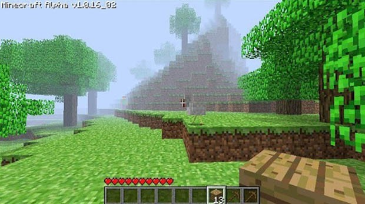

Este documento foi feito para contar a história do herobrine, então se você achou, não conte a ningúem, e cuidado para não deixar a luz desligada.
Neste site há coisas escondidas, não procure.
Primeiramente devemos saber o que é Minecraft.
Foi criado em 18 de novembro de 2011, Minecraft é um jogo de construir e explorar, existem biomas como savana, mesa, neve e vários outros, contendo diferentes níveis de perigo e segredos, e dentre estes segredos, a famosa lenda do Herobrine.
De onde ele surgiu
Herobrine teve a sua aparição anos atrás na versão Java Alpha 1.0.16_02, na seed 478868574082066804. De alguma maneira descobriram a seed do tão famoso momento em que Herobrine foi visto pela primeira vez, mas isto não vem ao caso.

Esta foi a primeira aparição do Herobrine, este local se passa nas coordenadas, X=5.16\Y=71\Z=-298.53.
Herobrine foi colocado no código do jogo para observar o jogador
Notch colocou herobrine no jogo em honra de seu irmão falecido, e quando você menos espera, Herobrine está te observendo atrás de uma árvore ou no meio da neblina.
Essa imagem foi tirada de uma pessoa que estava incomodada com este mob misterioso, toda vez ele aparecia, e segundos depois que sumia, árvores começaram e perder suas folhas rapidamente, pirâmides surgiam no mar sem motivo, túneis de 2x2 apareciam em montanhas e várias outras coisas estranhas aconteciam.
Tudo isso ficou em segredo
O usuário salvou, saiu do jogo e foi para o fórum do Minecraft publicar o que havia acontecido em sua jogatina, esperando que algum outro jogador também tivesse passado por isso. Momentos depois, alguns usuários comentaram que haviam notado uma entidade estranha em seu jogo, que foi apelidado de Herobrine. Mas pouco tempo depois, todas as postagens haviam sido apagadas.
Herobrine ainda esta escondido no código
Nas atalizações recentes da Mojang sempre aparece escrito que Herobrine foi removido do código do jogo, aparece em seu menu ou na tela de loading no Minecraft na versão de console, a Mojang sempre coloca isso em suas atualizações para motivar os jogadores a jogar mais, procurando a tal entidade, mas o que poucos sabem, é que Herobrine ainda não foi removido do jogo, não porque a Mojang não queira retirá-lo, mas sim porque eles não conseguem retirar do código.